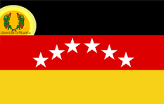

Day 9: Summary of Our South American Adventure

This image shows the busy streets of Lima, where old colonial buildings mix with modern life.

These pictures shows the amazing places we visited in South America.
Welcome to South America!
South America is a big continent with many different places to explore. There are high mountains, deep jungles, and beautiful beaches. The people here speak different languages and have many fun traditions.
Brazil
Brazil is a huge country with the Amazon Rainforest, where many animals live. We also saw the big city of Rio de Janeiro, with its famous Carnival and the giant statue of Christ the Redeemer.
The Amazon is full of trees and rivers, and it's one of the most exciting places on Earth!
Argentina
In Argentina, we saw beautiful waterfalls at Iguazu and snowy mountains in Patagonia. Buenos Aires, the capital, is full of music and dance called tango.

Argentina has lots of cool places to visit, from icy peaks to sunny cities.
Peru
Peru is famous for Machu Picchu, an old city built by the Incas. We also learned about llamas, which are animals that live in the mountains.

Machu Picchu is a magical place high up in the mountains where people lived a long, long time ago.
Chile
Chile is a long, skinny country with deserts, forests, and the big city of Santiago. We also heard about Easter Island, where giant stone faces called moai stand.

Chile has so many different places to see, from the driest desert to mysterious islands.
Bolivia
Bolivia has high mountains and the Uyuni Salt Flats, which look like a giant mirror. We also saw Lake Titicaca, a big lake high in the mountains.

The salt flats in Bolivia are so flat and shiny that it looks like you’re walking on the sky!
Colombia
Colombia is known for its coffee and the colorful city of Bogotá. The country has beautiful beaches and tall mountains too.

Colombia is full of bright colors and friendly people who love music and dance.
Venezuela
Venezuela is where we saw the tallest waterfall in the world, Angel Falls. The country also has a big city called Caracas and lots of oil.

Angel Falls is so tall that the water turns into mist before it hits the ground!
Ecuador
Ecuador is famous for the Galápagos Islands, where you can see animals that live nowhere else. The capital, Quito, is high in the mountains near the equator.

The Galápagos Islands are a magical place full of animals like giant turtles and playful sea lions.
Argentina

The Andes Mountains form a stunning natural border along Argentina's western edge.


Medellín and Cali are two of Colombia's most iconic cities, each with its own unique charm and attractions.
| State | Flag | Capital City |
|---|---|---|
| Zulia |  |
Maracaibo |
| Potosí | Potosí | |
| Miranda |  | Los Teques |
| Antofagasta |  |
Antofagasta |
| Valle del Cauca |  |
Cali |
Did you know?
The Amazon River in South America is so long and wide that it carries more water than any other river on Earth.
The Andes Mountains are the longest mountain range in the world and stretch all the way along South America's west coast.
In the Galápagos Islands, animals like giant tortoises and marine iguanas live, and you can't find them anywhere else in the world!
Patagonia, at the southern tip of South America, is a land of glaciers, penguins, and incredible natural beauty.
The Uyuni Salt Flats in Bolivia are so flat that they are often used to test space equipment like rovers.